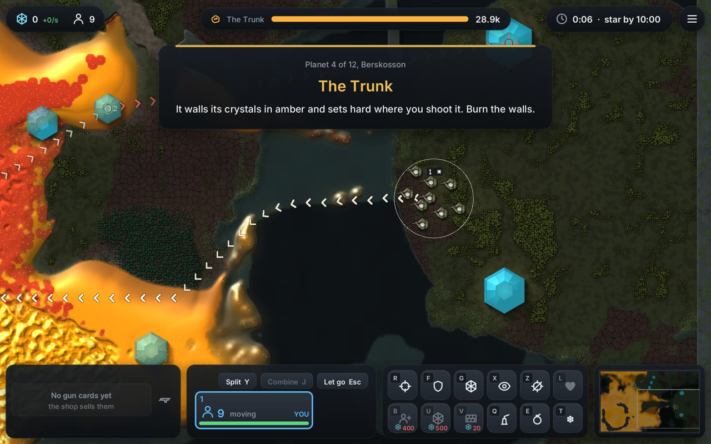
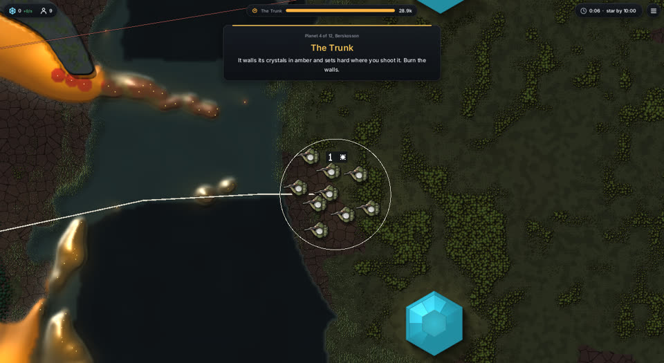
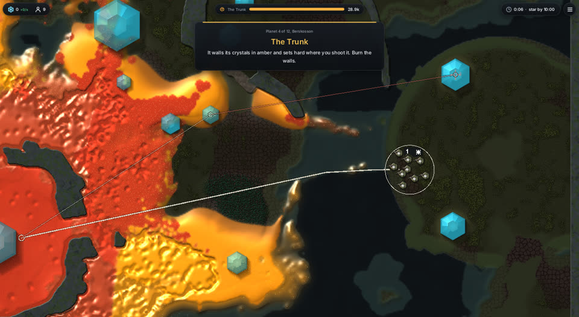
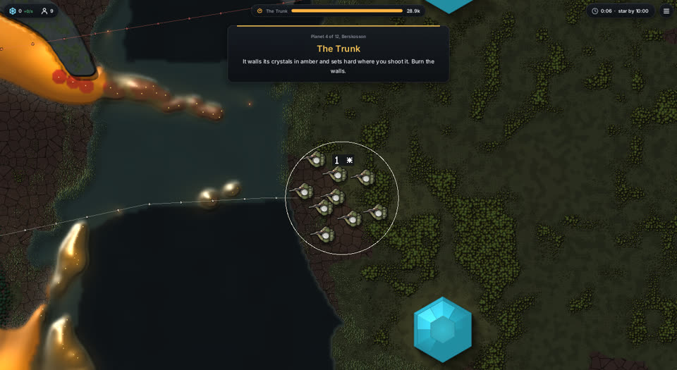
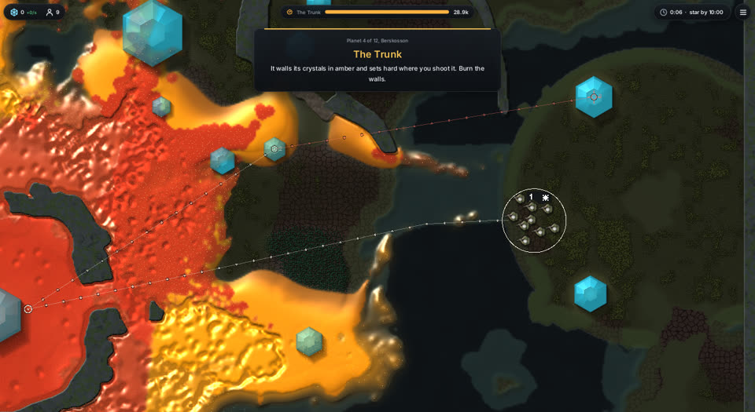

Real frames from the game: planet 4 (the Trunk), run seed 1, squad of 9 sent to a crystal with two more orders queued (Shift), the last an attack-move. Left column at zoom 6, right at zoom 3. Options A to C were a local prototype; B is the one built.
Built · Scott picked B at 07:29Z
Marching chevrons on the real route, as built
The built version draws each chevron with a wide pen in one mark, so it keeps its size on a 4K screen at 250% (the still below is UI 250% at 1920 wide). Clips at zoom 6 and 12, 1.2 game seconds.
Zoom 6Zoom 12

UI 250%: chevrons, the queued leg's chevrons on its own route, numbered goals.Today
A dotted hairline, straight to the goal
Zoom 6: the line is one pixel, dashed every 2 px.Zoom 3: the line runs over water; the squad walks round it.
It is a straight line, so it crosses water, rock and walls the squad will walk round. It is not the way the squad goes.
One pixel wide with no dark edge, so it vanishes on bright slime and will be thinner still on a 4K screen at 250%.
The end ring is the same for a move and an attack-move; only the colour changes, and queued stops carry no order number.
Option A · recommended, not picked
The real route, as a solid line with a dark edge

Zoom 6: the line bends along the shore, where the squad really walks.

Zoom 3: queued stops are thinner and numbered 2 and 3; the attack-move is red with a crosshair.
1.4 game seconds: the line stays still and the squad walks it.
Traced from the walking map the squad already follows, then cut to straight runs between corners. A few hundred cells a frame, for the selected squad only, so it costs next to nothing.
Cream on a dark edge, as the selection ring is drawn, so it reads on ground, water and slime alike.
Goal marks by order: a ring and dot for a move, a ring and crosshair for an attack-move; queued stops numbered.
To add when built: the line shortens behind the squad as it walks, and it scales with the interface size for 4K.
Option B
Marching chevrons along the real route
Zoom 6Zoom 3
The chevrons drift toward the goal (the clip is 5 frames a second, so it steps; in game it is smooth).
Shows which way the squad is going at a glance, which a plain line does not.
Busier: with several squads linked, moving chevrons all over the map compete with the slime, and they are a painted motion with nothing in the world behind it.
Option C
Dots one second of walking apart

Zoom 6

Zoom 3
Counting the dots tells you how long the walk takes, which helps when timing a push before a cold snap ends.
Faint at play zoom: the dots are small and far apart, so it reads worse than A at a glance.
Fits with the formation ghost
The other thread is building a hold-and-drag ghost of the formation at the goal. Any of these options draws the route up to the goal and leaves the goal itself to that ghost while you hold the button; after you let go, the goal mark above takes over.
Prototype: PATHLOOK=a|b|c env key on a local build, Game::route in paths.rs reading Squad::map. Film: larder-world look=DIR run=1:4 mode=squads hand=movetour,10,queue centre=squad,6 at=6.